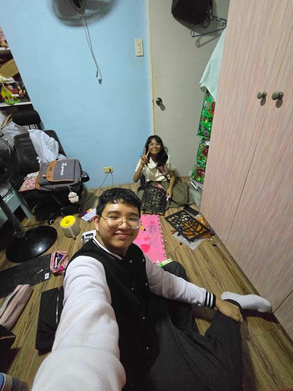
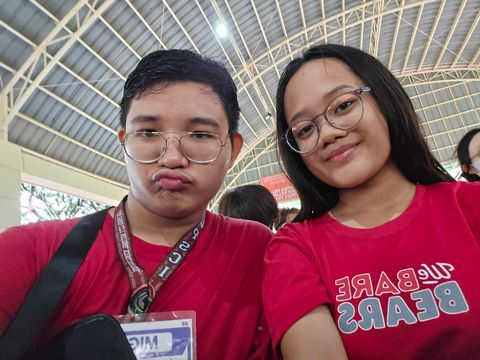
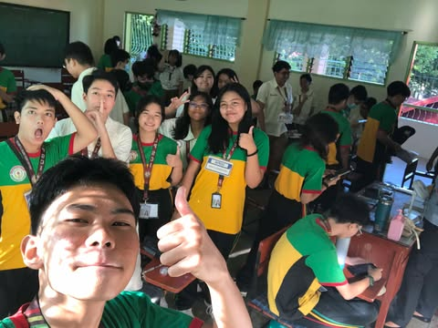

Now, let us take a look at my experiences this quarter in school. I must say myself that it has been a hard quarter, however still fun and memorable.
| Description | Picture |
|---|---|
| The first memorable activity is the stained glass painting. In this activity, my friend and I went to her house so that we could cut the illustration board together. Even if it was being crammed, we did chismisan and singing to songs |  |
| Next is on foundation day. I had a lot of fun seeing the different club booths and games that were held at our school. In this picture, the dance trouped performed infront of the audience and I had to ofcourse get a video of it! |  |
| The next experience is periodicals. This week was a big week for our grades and because of that it put me under a lot of pressure. Nevertheless, we still tried to enjoy the tough times together as classmates and even snapped a picture! |  |